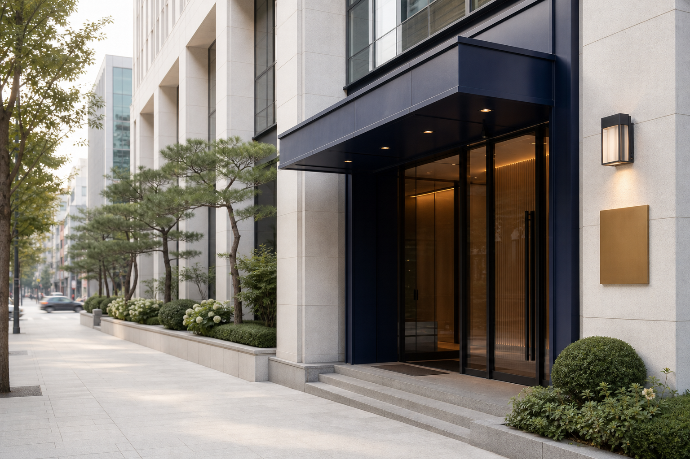
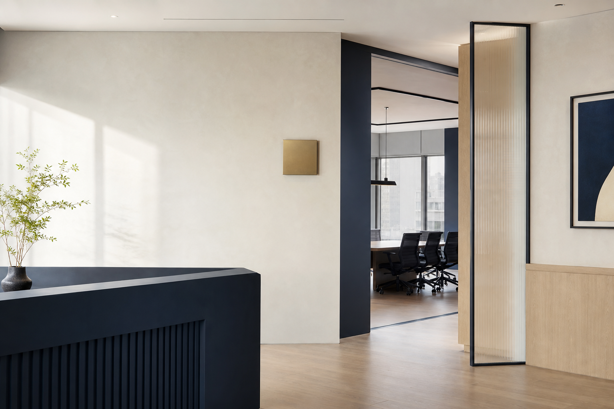

대중교통
가까운 지하철역 또는 버스정류장 정보를 입력해 주세요.

방문 상담을 원하시면 위치와 상담 시간을 확인해 주세요.
사무소 기본 정보

지도 안내
경기도 안산시 단원구 광덕서로 62, 고잔법조빌딩 2층에 위치해있습니다.
지도에서 직접 확대·축소하거나 화면을 움직여 주변 위치를 확인할 수 있습니다.
교통편 안내
가까운 지하철역 또는 버스정류장 정보를 입력해 주세요.
주요 도로에서 찾아오는 방법을 입력해 주세요.
고잔법조빌딩 주차장을 이용해 주세요.
상담 가능 시간과 필요한 준비사항을 안내해 드립니다.